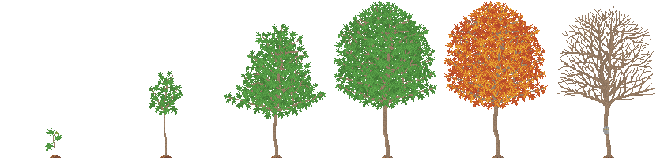
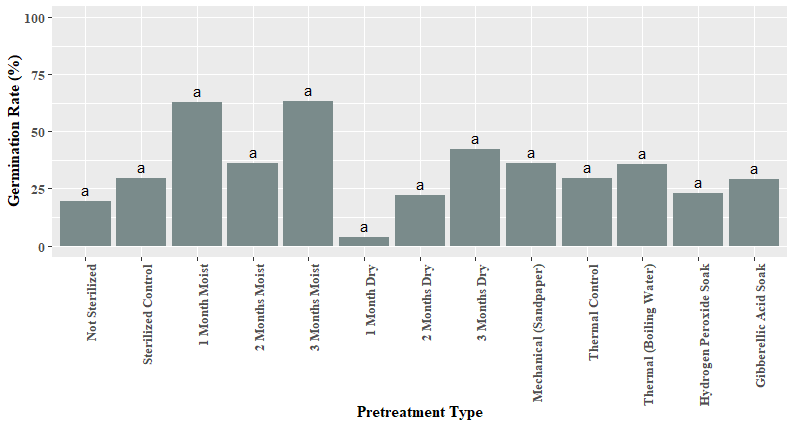
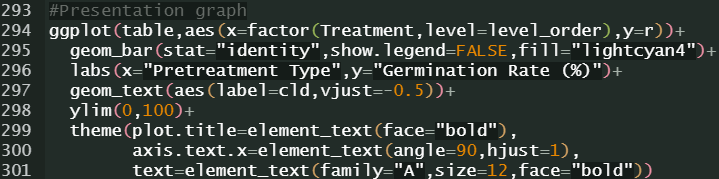

I'm an intensely motivated person that's always trying to learn new things and break into new frontiers. I've always loved both technical and creative writing, various arts/crafts, and research. However, lately I've found myself more and more enamoured with coding and all that can be done with it in the digital world.

I started my career in horticulture, and while I was getting my Master's degree I was introduced to coding in R. I started with predictive models and statistics for certain classes and loved the introduction, so kept learning on my own. Eventually I was able to code all of my statistical analyses for my thesis data from scratch.


After graduation, I started picking up Python to make a little horticulture-themed mobile game with my husband. After only around five months, we've already gotten to the polishing stage. I've taken particular pride in my work setting a real-time growing mechanic, a land expansion feature, the UI, and of course all of the pixel art.
I'm always eager to expand my knowledge about the coding languages I know, and it seems that I can pick up new languages very quickly now that I've got a good start. I created this website myself, using HTML5 and CSS.